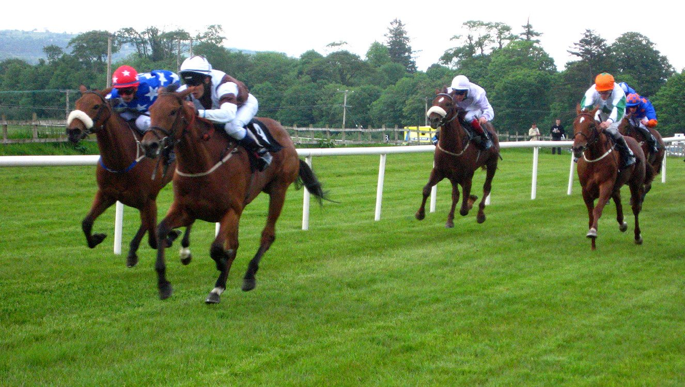

Un hocico da a Night In Vegas la Two-Year-Old Conditions Stakes de Ascot
Night In Vegas (5/2) se impuso por un hocico en la Two-Year-Old Conditions Stakes del Qatar Racing British Champions Day, en Ascot, tras remontar desde atrás ante Arapaho Gold y Satellite Of Love.

Menos de medio cuerpo separó a los tres primeros en la carrera que abrió la jornada. El favorito, Arapaho Gold, y Satellite Of Love corrieron en primera línea desde la salida. A mitad de recorrido, Arapaho Gold tomó la cabeza y su cambio de ritmo dejó en apuros a varios rivales.
Satellite Of Love no se descolgó. Los dos entraron en el último furlong prácticamente igualados, y Arapaho Gold, peleón hasta el final, parecía tener la carrera en el bolsillo.
Night In Vegas había corrido a cola. Se pegó a la estela de los dos de cabeza y lanzó un último estirón sobre la línea. Ganó por un hocico a Arapaho Gold, con Satellite Of Love a una cabeza más. Lo hizo a contracorriente de cómo se había desarrollado la carrera.
El potro ya había dado buenos réditos a sus propietarios: suma dos carreras de subastas de alta dotación.
La foto tardó en confirmar el resultado. "Mi corazón no está para esto. Estaba literalmente ahí arriba con Becky Dunlop y le dije que creía que nos habían ganado, pero ella me dijo que esperara a la foto. Tengo que reconocer que, cuando salió, armé un buen escándalo e hice un poco el ridículo", relató la preparadora Eve Johnson Houghton.
La preparadora también reconoció el mérito de los rivales y reclamó otra categoría para la prueba: "Pensaba que nos había ganado, pero hay que reconocerles el mérito. Fue una carrera dura. Debería ser de Grupo, pero entiendo por qué no lo es. Entiendo la política que hay detrás, pero es tan buena como una carrera de Grupo".
Por Martín Larrañeta